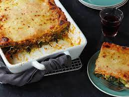

Classic Italian Lasagna

A hearty lasagna made the italian way!
Prep: 30 mins
Cook: 45 min
Yield: 6 servings
Ingredients for Bechamel Sauce:
- 5 tablespoons unsalted butter, plus 2 tablespoons for the lasagna
- 1/2 cup all-purpose flour
- 4 cups whole milk at room temperature
- Pinch freshly grated nutmeg
- 1 1/2 cups tomato sauce, recipe follows
- Salt and white pepper
- 1/4 cup extra-virgin olive oil
- 1 pound ground chuck beef
- Salt and pepper
- 1 1/2 pounds ricotta cheese
- 3 large eggs
- 1 pound lasagna sheets, cooked al dente
- 2 packages (10 ounces each) frozen chopped spinach, thawed and squeezed dry
- 3 cups shredded mozzarella
- 1/4 cup freshly grated Parmesan
Ingredients for Simple Tomato Sauce:
- 1/2 cup extra-virgin olive oil
- 1 small onion, chopped
- 2 cloves garlic, chopped
- 1 stalk celery, chopped
- 1 carrot, chopped
- Sea salt and freshly ground black pepper
- 2 (32-ounce) cans crushed tomatoes
- 2 dried bay leaves
- 4 tablespoons unsalted butter, optional
Steps:
- Preheat oven to 375 degrees F.
- Bechamel sauce:
- In a 2-quart pot, melt 5 tablespoons of butter over medium heat. When butter has completely melted, add the flour and whisk until smooth, about 2 minutes. Gradually add the milk, whisking constantly to prevent any lumps from forming. Continue to simmer and whisk over medium heat until the sauce is thick, smooth and creamy, about 10 minutes. The sauce should be thick enough to coat the back of wooden spoon. Remove from heat and add the nutmeg and tomato sauce. Stir until well combined and check for seasoning. Set aside and allow to cool completely.
- In a saute pan, heat extra-virgin olive oil. When almost smoking, add the ground beef and season with salt and pepper. Brown meat, breaking any large lumps, until it is no longer pink. Remove from heat and drain any excess fat. Set aside and allow to cool completely.
- In a medium sized bowl, thoroughly mix the ricotta and eggs. Season with salt and pepper. Set aside.
- Into the bottom of a 13 by 9-inch baking dish, spread 1/3 of the bechamel sauce. Arrange the pasta sheets side by side, covering the bottom of the baking dish. Evenly spread a layer of all the ricotta mixture and then a layer of all the spinach. Arrange another layer of pasta sheets and spread all the ground beef on top. Sprinkle 1/2 the mozzarella cheese on top of the beef. Spread another 1/3 of the bechamel sauce. Arrange the final layer of pasta sheets and top with remaining bechamel, mozzarella and Parmesan cheeses. Cut the remaining 2 tablespoons of butter into 1/4-inch cubes and top lasagna.
- Line a large baking sheet with aluminum foil. Place lasagna dish on top, cover and put on the middle rack of the oven and bake until top is bubbling, about 30 minutes. Remove cover and continue to bake for about 15 minutes.
- Simple Tomato Sauce:
- In a large casserole pot or Dutch over, heat oil over medium high heat. Add onion and garlic and saute until soft and translucent, about 5 to 10 minutes. Add celery and carrots and season with salt and pepper. Saute until all the vegetables are soft, about 5 to 10 minutes. Add tomatoes and bay leaves and simmer uncovered on low heat for 1 hour or until thick. Remove bay leaves and check for seasoning. If sauce still tastes acidic, add unsalted butter, 1 tablespoon at a time to round out the flavors.
- Add 1/2 the tomato sauce into the bowl of a food processor. Process until smooth. Continue with remaining tomato sauce.
- If not using all the sauce, allow it to cool completely and pour 1 to 2 cup portions into freezer plastic bags. This will freeze up to 6 months.